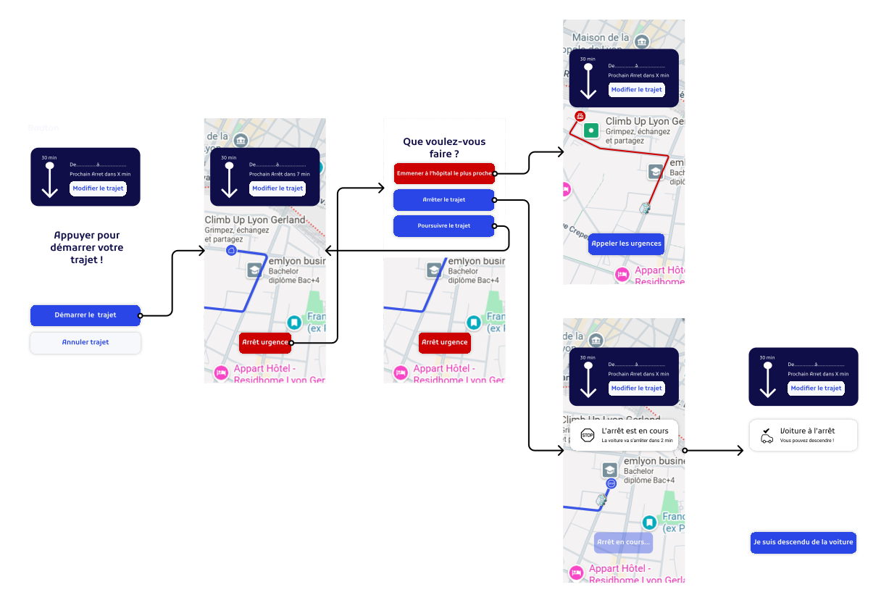

Documentation projet - Les mobilités alternatives
1. Introduction au projet
Objectif : Créer une application qui facilite le déplacement des personnes âgées pour leur trajet du quotidien.
Notre projet est une application de voiture autonome pour les personnes âgées. Simplifier le déplacement des personnes âgées pour leur course habituelle.
2. La cible → QUI ?
Contenu : Notre application est destinée aux personnes âgées qui ont des sorties à faire au quotidien mais qui ne peuvent pas se déplacer facilement, ainsi qu'aux personnes à mobilité réduite. Elle leur permet de réserver un véhicule autonome adapté à leurs besoins afin de se rendre à leurs rendez-vous, faire leurs courses ou rendre visite à leurs proches en toute simplicité et sécurité.


3. Le contexte → POURQUOI ?
- En France, environ 16,4% des personnes âgées (75 ans ou plus) sont en perte d’autonomie, ce qui représente une préoccupation croissante pour leur mobilité.
- De plus, 30 % des personnes âgées de 65 ans et plus déclarent avoir des difficultés à marcher trois pâtés de maisons.
- Les contraintes identifiées sont techniques, financières, temporelles.
4. Le service → COMMENT ?
Un parcours utilisateur
- Situation initiale : l'utilisateur lance l'application.
- Choix de la destination
- Choix des options (points d’arrêt…)
- Choisir jour et heure du trajet
- L'application indique quel véhicule arrive et dans combien de temps
- L'utilisateur monte dans le véhicule autonome
- Possibilité de changer les points d’arrêt
- Situation finale : l’utilisateur arrive à destination

Fonctionnalité de création d'un trajet aller-retour
- Entrer le point de départ et d'arrivée
- Ajouter des point d'arrêt au trajet
- Paramétrer la date de départ
- Recevoir une notification à l'arrivée du véhicule
- Monter dans la voiture et démarrer le trajet
- Laisser la voiture vous transporter à vos points d'arrêt
- Revenir au point de départ et recevoir un récapitulatif du trajet effectué

Fonctionnalité d'arrêt d'urgence
- Appuyer en cours de trajet sur le bouton d'arrêt d'urgence
- Choisir d'être emmené à l'hôpital, ou choisir de s'arrêter à une place sécurisée proche

Technologies nécessaires
Pour permettre la réalisation de ce projet, il nous faudrait :
- un partenariat avec une entreprise spécialisée dans la construction de voitures autonomes, telle que Waymo
- l'accès à une API de carte interactive telle que Google Maps